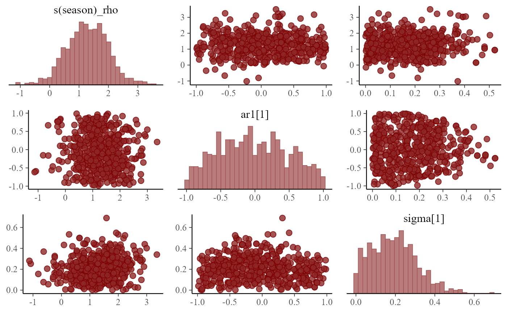
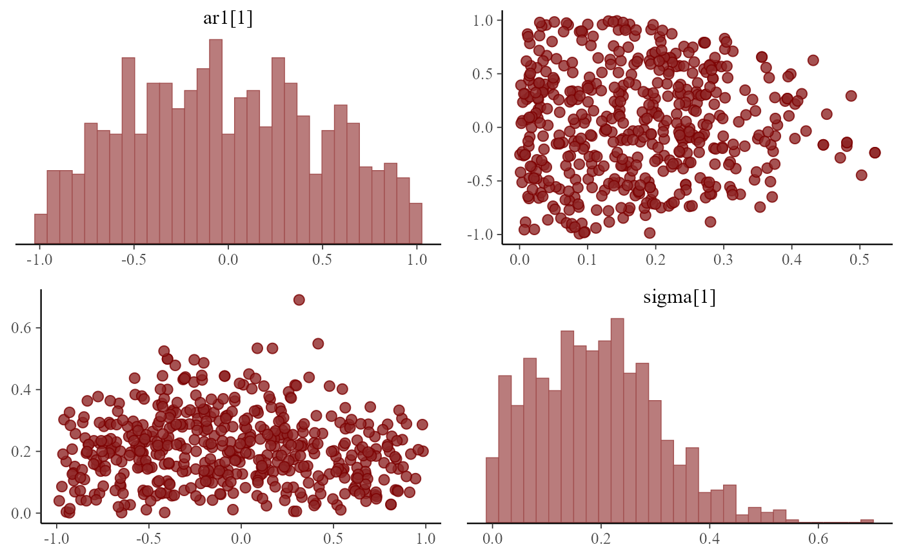

A pairs
method that is customized for MCMC output.
Usage
# S3 method for mvgam
pairs(x, variable = NULL, regex = FALSE, use_alias = TRUE, ...)Arguments
- x
An object of class
mvgam- variable
Names of the variables (parameters) to plot, as given by a character vector or a regular expression (if
regex = TRUE). By default, a hopefully not too large selection of variables is plotted.- regex
Logical; Indicates whether
variableshould be treated as regular expressions. Defaults toFALSE.- use_alias
Logical. If more informative names for parameters are available (i.e. for beta coefficients
bor for smoothing parametersrho), replace the uninformative names with the more informative alias. Defaults toTRUE- ...
Further arguments to be passed to
mcmc_pairs.
Value
Plottable objects whose classes depend on the arguments supplied.
See mcmc_pairs for details.
Details
For a detailed description see
mcmc_pairs.
Examples
# \donttest{
simdat <- sim_mvgam(n_series = 1, trend_model = 'AR1')
mod <- mvgam(y ~ s(season, bs = 'cc'),
trend_model = AR(),
noncentred = TRUE,
data = simdat$data_train,
chains = 2)
#> Compiling Stan program using cmdstanr
#>
#> In file included from stan/lib/stan_math/stan/math/prim/prob/von_mises_lccdf.hpp:5,
#> from stan/lib/stan_math/stan/math/prim/prob/von_mises_ccdf_log.hpp:4,
#> from stan/lib/stan_math/stan/math/prim/prob.hpp:359,
#> from stan/lib/stan_math/stan/math/prim.hpp:16,
#> from stan/lib/stan_math/stan/math/rev.hpp:16,
#> from stan/lib/stan_math/stan/math.hpp:19,
#> from stan/src/stan/model/model_header.hpp:4,
#> from C:/Users/uqnclar2/AppData/Local/Temp/Rtmp2bnpq5/model-3cd029ee3f0d.hpp:2:
#> stan/lib/stan_math/stan/math/prim/prob/von_mises_cdf.hpp: In function 'stan::return_type_t<T_x, T_sigma, T_l> stan::math::von_mises_cdf(const T_x&, const T_mu&, const T_k&)':
#> stan/lib/stan_math/stan/math/prim/prob/von_mises_cdf.hpp:194: note: '-Wmisleading-indentation' is disabled from this point onwards, since column-tracking was disabled due to the size of the code/headers
#> 194 | if (cdf_n < 0.0)
#> |
#> stan/lib/stan_math/stan/math/prim/prob/von_mises_cdf.hpp:194: note: adding '-flarge-source-files' will allow for more column-tracking support, at the expense of compilation time and memory
#> Start sampling
#> Running MCMC with 2 parallel chains...
#>
#> Chain 1 Iteration: 1 / 1000 [ 0%] (Warmup)
#> Chain 1 Iteration: 100 / 1000 [ 10%] (Warmup)
#> Chain 2 Iteration: 1 / 1000 [ 0%] (Warmup)
#> Chain 2 Iteration: 100 / 1000 [ 10%] (Warmup)
#> Chain 1 Iteration: 200 / 1000 [ 20%] (Warmup)
#> Chain 1 Iteration: 300 / 1000 [ 30%] (Warmup)
#> Chain 1 Iteration: 400 / 1000 [ 40%] (Warmup)
#> Chain 1 Iteration: 500 / 1000 [ 50%] (Warmup)
#> Chain 1 Iteration: 501 / 1000 [ 50%] (Sampling)
#> Chain 1 Iteration: 600 / 1000 [ 60%] (Sampling)
#> Chain 2 Iteration: 200 / 1000 [ 20%] (Warmup)
#> Chain 2 Iteration: 300 / 1000 [ 30%] (Warmup)
#> Chain 2 Iteration: 400 / 1000 [ 40%] (Warmup)
#> Chain 2 Iteration: 500 / 1000 [ 50%] (Warmup)
#> Chain 2 Iteration: 501 / 1000 [ 50%] (Sampling)
#> Chain 2 Iteration: 600 / 1000 [ 60%] (Sampling)
#> Chain 1 Iteration: 700 / 1000 [ 70%] (Sampling)
#> Chain 1 Iteration: 800 / 1000 [ 80%] (Sampling)
#> Chain 1 Iteration: 900 / 1000 [ 90%] (Sampling)
#> Chain 2 Iteration: 700 / 1000 [ 70%] (Sampling)
#> Chain 2 Iteration: 800 / 1000 [ 80%] (Sampling)
#> Chain 2 Iteration: 900 / 1000 [ 90%] (Sampling)
#> Chain 1 Iteration: 1000 / 1000 [100%] (Sampling)
#> Chain 2 Iteration: 1000 / 1000 [100%] (Sampling)
#> Chain 1 finished in 0.4 seconds.
#> Chain 2 finished in 0.4 seconds.
#>
#> Both chains finished successfully.
#> Mean chain execution time: 0.4 seconds.
#> Total execution time: 0.6 seconds.
#>
pairs(mod)

pairs(mod, variable = c('ar1', 'sigma'), regex = TRUE)

# }